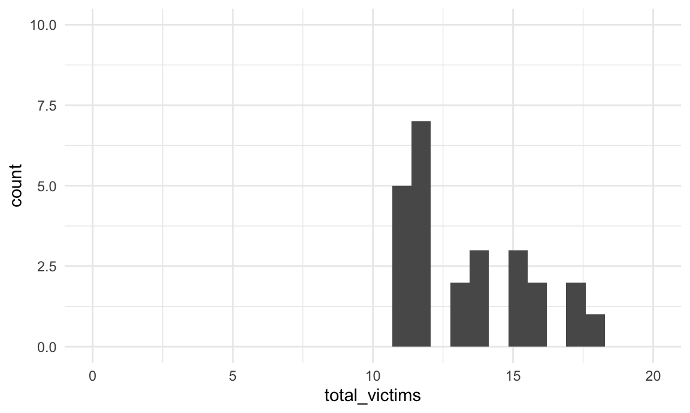
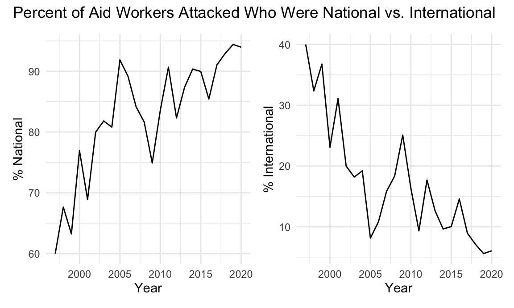

Section 1
Natalie Boychuk, E. Brennan Bollman, Emily Bamforth, Alisha Sarakki, and Kailey Rishovd
11/26/2020
This document is a working draft of section 1 of our final report, which will focus on global levels of violence against aid workers.
library(tidyverse)## ── Attaching packages ──────────────────────────────────────────────────────────── tidyverse 1.3.0 ──## ✓ ggplot2 3.3.2 ✓ purrr 0.3.4
## ✓ tibble 3.0.3 ✓ dplyr 1.0.2
## ✓ tidyr 1.1.2 ✓ stringr 1.4.0
## ✓ readr 1.3.1 ✓ forcats 0.5.0## ── Conflicts ─────────────────────────────────────────────────────────────── tidyverse_conflicts() ──
## x dplyr::filter() masks stats::filter()
## x dplyr::lag() masks stats::lag()library(dplyr)
library(patchwork)
library(leaflet)
library(lubridate)##
## Attaching package: 'lubridate'## The following objects are masked from 'package:base':
##
## date, intersect, setdiff, unionlibrary(rvest)## Loading required package: xml2##
## Attaching package: 'rvest'## The following object is masked from 'package:purrr':
##
## pluck## The following object is masked from 'package:readr':
##
## guess_encodinglibrary(httr)
library(flexdashboard)
library(plotly)##
## Attaching package: 'plotly'## The following object is masked from 'package:httr':
##
## config## The following object is masked from 'package:ggplot2':
##
## last_plot## The following object is masked from 'package:stats':
##
## filter## The following object is masked from 'package:graphics':
##
## layoutlibrary(viridis)## Loading required package: viridisLitedevtools::install_github("benmarwick/wordcountaddin", type = "source", dependencies = TRUE)## Skipping install of 'wordcountaddin' from a github remote, the SHA1 (8c063135) has not changed since last install.
## Use `force = TRUE` to force installationknitr::opts_chunk$set(
fig.width = 6,
fig.asp = .6,
out.width = "90%"
)
theme_set(theme_minimal() + theme(legend.position = "bottom"))
options(
ggplot2.continuous.colour = "viridis",
ggplot2.continuous.fill = "viridis"
)
scale_colour_discrete = scale_colour_viridis_d
scale_fill_discrete = scale_fill_viridis_dData import and tidying
url = "https://aidworkersecurity.org/incidents/search"
aidworker_html = read_html(url)
aidworker_df =
aidworker_html %>%
html_nodes(css = "table") %>%
first() %>%
html_table() %>%
as_tibble()
aidworker_df =
aidworker_df %>%
janitor::clean_names() %>%
select(-source, -verified) %>%
rename(year = year_sort_descending) %>%
mutate(intl_org_affected =
case_when(
un != 0 ~ "yes",
ingo != 0 ~ "yes",
icrc != 0 ~ "yes",
ifrc != 0 ~ "yes",
other != 0 ~ "yes",
lngo_and_nrcs != 0 ~ "no"),
intl_org_affected = as.factor(intl_org_affected)) %>%
relocate(id, month, day, year, country, intl_org_affected)Brennan notes:
I think this
case_whenapproach works to identify whether an international org was affected, instead of the pivot idea. Otherwise, I agree with Natalie that there’s no way to do it without making 6 copies of each incident. The existing data already seems to be the clearest way to present the number of people from each type of org affected, and we can plot that.if happy with cleaning, we can rename the
aidworker_tidy_dfas justaidworker_df
Natalie notes:
distinct was left behind from when I was trying to get the pivot_longer working. Deleted now!
I’m happy with the tidyness of it now but I think it would be more useful to have a single date variable to use in our analysis - I tried mutating to get to a date but keep getting all NAs. If someone else figures this out lemme know!
Emily notes:
This looks great Brennan and Natalie! The
case_whenapproach looks great for the org types for the reasons you outlined. I have an idea for the date variable, but what would we be using it for? Just wasn’t sure which analysis requires it! Happy to take a stab at it though - let’s discuss tomorrow?Can I remove gender variables from data frame? Don’t believe we have a need for these for our analysis.
We have many “unknown” values for actor type and name, and some blank countries, lat/long…in addition to NAs for some other variables. I think we may want to be consistent across the board and make all missing data NAs. Do you all agree? If so, I can address this.
Look at frequency of attacks on staff of various types of organizations
aidworker_df %>%
ggplot(aes(x = intl_org_affected)) +
geom_bar()Brennan: I’m stuck on this part. Natalie - you were thinking about it conceptually a lot, any ideas?
International vs National staff attacks
aidworker_df %>%
group_by(year) %>%
summarize(tot_national = sum(total_national_staff),
tot_intl = sum(total_international_staff),
tot_both = sum(total_victims),
pct_intl = (tot_intl/tot_both)*100,
pct_national = (tot_national/tot_both)*100) %>%
knitr::kable()## `summarise()` ungrouping output (override with `.groups` argument)| year | tot_national | tot_intl | tot_both | pct_intl | pct_national |
|---|---|---|---|---|---|
| 1997 | 45 | 30 | 75 | 40.000000 | 60.00000 |
| 1998 | 46 | 22 | 68 | 32.352941 | 67.64706 |
| 1999 | 43 | 25 | 68 | 36.764706 | 63.23529 |
| 2000 | 70 | 21 | 91 | 23.076923 | 76.92308 |
| 2001 | 62 | 28 | 90 | 31.111111 | 68.88889 |
| 2002 | 68 | 17 | 85 | 20.000000 | 80.00000 |
| 2003 | 117 | 26 | 143 | 18.181818 | 81.81818 |
| 2004 | 101 | 24 | 125 | 19.200000 | 80.80000 |
| 2005 | 158 | 14 | 172 | 8.139535 | 91.86047 |
| 2006 | 214 | 26 | 240 | 10.833333 | 89.16667 |
| 2007 | 186 | 35 | 221 | 15.837104 | 84.16290 |
| 2008 | 227 | 51 | 278 | 18.345324 | 81.65468 |
| 2009 | 221 | 74 | 295 | 25.084746 | 74.91525 |
| 2010 | 209 | 41 | 250 | 16.400000 | 83.60000 |
| 2011 | 282 | 29 | 311 | 9.324759 | 90.67524 |
| 2012 | 228 | 49 | 277 | 17.689531 | 82.31047 |
| 2013 | 415 | 60 | 475 | 12.631579 | 87.36842 |
| 2014 | 300 | 32 | 332 | 9.638554 | 90.36145 |
| 2015 | 260 | 29 | 289 | 10.034602 | 89.96540 |
| 2016 | 252 | 43 | 295 | 14.576271 | 85.42373 |
| 2017 | 285 | 28 | 313 | 8.945687 | 91.05431 |
| 2018 | 379 | 29 | 408 | 7.107843 | 92.89216 |
| 2019 | 456 | 27 | 483 | 5.590062 | 94.40994 |
| 2020 | 264 | 17 | 281 | 6.049822 | 93.95018 |
| NA | 4888 | 777 | 5665 | 13.715799 | 86.28420 |
## If look at last row of data, appears "NA" is the total
## Natalie note: I'm only seeing NA in the year column, not anywhere else - looks like the sums worked fine. I think R just knows not to add up the years.
## Plot of percentage of nationals affected by attacks over time
pct_ntl =
aidworker_df %>%
group_by(year) %>%
summarize(tot_national = sum(total_national_staff),
tot_intl = sum(total_international_staff),
tot_both = sum(total_victims),
pct_intl = (tot_intl/tot_both)*100,
pct_national = (tot_national/tot_both)*100) %>%
ggplot(aes(x = year, y = pct_national)) +
geom_line() +
labs(
x = "Year",
y = "% National"
)## `summarise()` ungrouping output (override with `.groups` argument)## Plot of percentage of internationals affected by attacks over time
pct_intl =
aidworker_df %>%
group_by(year) %>%
summarize(tot_national = sum(total_national_staff),
tot_intl = sum(total_international_staff),
tot_both = sum(total_victims),
pct_intl = (tot_intl/tot_both)*100,
pct_national = (tot_national/tot_both)*100) %>%
ggplot(aes(x = year, y = pct_intl)) +
geom_line() +
labs(
x = "Year",
y = "% International"
)## `summarise()` ungrouping output (override with `.groups` argument)pct_ntl + pct_intl +
plot_annotation(title = "Percent of Aid Workers Attacked Who Were National vs. International")## Warning: Removed 1 row(s) containing missing values (geom_path).
## Warning: Removed 1 row(s) containing missing values (geom_path).
Roughly this shows that proportions of nationals attacked has always been higher than internationals, with increasing percentage of national staff attacked over time.
aidworker_df %>%
drop_na(year) %>%
group_by(year) %>%
summarize(tot_national = sum(total_national_staff),
tot_intl = sum(total_international_staff),
tot_both = sum(total_victims)) %>%
ggplot(aes(x = year)) +
geom_line(aes(y = tot_national, color = "National Staff")) +
geom_line(aes(y = tot_intl, color = "International Staff")) +
labs(title = "Aid Worker Attacks over time",
x = "Year",
y = "Number of Aid Workers Attacked")## `summarise()` ungrouping output (override with `.groups` argument)
Number of aid worker attacks are increasing over time, especially among national staff.
Type of Attack
aidworker_df %>%
filter(means_of_attack == "Kidnapping") %>%
group_by(year) %>%
summarize(tot_national = sum(total_national_staff),
tot_intl = sum(total_international_staff),
tot_both = sum(total_victims)) %>%
ggplot(aes(x = year)) +
geom_line(aes(y = tot_national, color = "National Staff")) +
geom_line(aes(y = tot_intl, color = "International Staff")) +
labs(title = "Aid Worker Kidnapping over time",
x = "Year",
y = "Number of Aid Workers Kidnapped")## `summarise()` ungrouping output (override with `.groups` argument)Kidnapping also increasing over time, particularly among national staff. Could put this side-by-side the total attack line plot.
Attempts to visualize type of attack over time - failed so far
aidworker_df %>%
drop_na(year) %>%
group_by(year, means_of_attack) %>%
ggplot(aes(x = year, y = total_victims, color = means_of_attack)) +
geom_point()Above is not good.
Note from Emily: What if we tried the following instead of the above, plotting by number of attacks, instead of by number of victims? Following plot still needs work (remove unknowns, any that we could combine?) but could be useful:
aidworker_df %>%
drop_na(year) %>%
group_by(year) %>%
summarise(number_attack = n(), means_of_attack) %>%
as_tibble() %>%
group_by(means_of_attack) %>%
ggplot(aes(x = year, y = number_attack, color = means_of_attack)) +
geom_line() +
labs(
title = "Types of Attack Over Time",
x = "Year",
y = "Number of Attacks"
)## `summarise()` regrouping output by 'year' (override with `.groups` argument)aidworker_df %>%
drop_na(year) %>%
group_by(year, means_of_attack) %>%
filter(year == 2019) %>%
ggplot(aes(x = means_of_attack, fill = means_of_attack)) +
geom_bar()
Note from Natalie: I don’t think we should use 2020 as our year of analysis if we limit ourselves to one year since the year isn’t over and excluding the fall/winter might ignore seasonality effects
I like this bar chart, but I think ‘count’ is the number of incidents, not the number of people affected. Would be really cool if this could be a shiny plot where could change year in a drop down to see how this changes over time? Or make a plotly so that you can hover over label to see number of intl/natl affected by each type of attack?
I’m not sure how to make those things work though.
Natalie: I’ll give this a closer look tomorrow morning!
## This was a failed attempt at summarizing by worker type to see if there are differences in means of attack by international vs. national status
#aidworker_df %>%
#select(id, year, total_national_staff, total_international_staff, means_of_attack) %>%
#as.numeric(c(total_international_staff, total_national_staff)) %>%
#group_by(means_of_attack) %>%
#summarize(across(total_national_staff:total_international_staff, count))
aidworker_df %>%
drop_na(year) %>%
group_by(year, means_of_attack) %>%
select(year, means_of_attack) %>%
filter(year == 2019) %>%
ggplot(aes(x = means_of_attack, fill = means_of_attack)) +
geom_bar()
Mapping the data…
Emily note to self: I think lat/long need to be converted to numeric in order to utilize in leaflet. Was encountering issues - will work on this tomorrow.
attack_map =
leaflet(aidworker_df) %>%
addTiles()